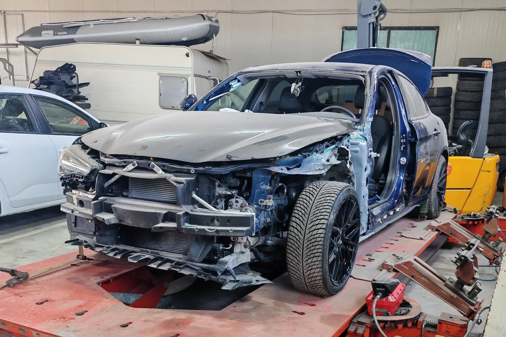
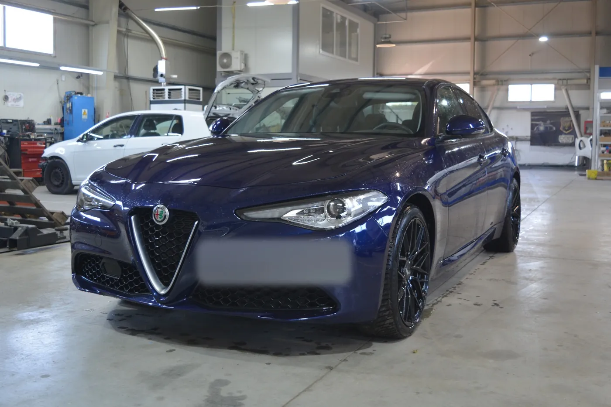

Ce faci imediat după un accident auto în Brașov
Un accident, chiar și unul ușor, te ia prin surprindere. În primele minute e ușor să uiți lucruri care contează mai târziu la despăgubire: o poză, un nume, o semnătură. Iar o greșeală mică făcută pe loc se poate transforma în săptămâni de corespondență cu asigurătorul.
Ghidul de mai jos urmează ordinea reală a lucrurilor: ce faci în primele minute, cum decizi între constatarea amiabilă și poliție, cum completezi formularul, ce acte îți trebuie la dosar și ce termene are asigurătorul.
Primele minute: pune-te în siguranță
Oprește imediat. Părăsirea locului accidentului fără motiv este sancționată, iar dacă sunt persoane rănite este infracțiune. Apoi:
- Pornește luminile de avarie și oprește motorul.
- Îmbracă vesta reflectorizantă înainte să cobori, mai ales noaptea sau în afara localității.
- Așază triunghiurile reflectorizante în spatele mașinii, la o distanță de la care ceilalți șoferi să aibă timp să reacționeze.
- Verifică dacă e cineva rănit, în mașina ta și în cealaltă.
Pe un drum circulat, cel mai mare pericol după impact e un al doilea impact. Dacă mașinile pot fi mutate și nu sunt răniți, nu rămâne pe carosabil mai mult decât e nevoie.
Când suni la 112
- dacă există persoane rănite, oricât de ușor ar părea;
- dacă mașinile blochează drumul și nu pot fi mutate;
- dacă există pericol de incendiu sau scurgeri de combustibil;
- dacă celălalt șofer pare băut, devine agresiv sau încearcă să plece.
Când sunt răniți, nu muta mașinile și nu șterge urmele accidentului până la sosirea poliției. Dacă sunt doar pagube materiale și blocați traficul, faceți întâi poze, apoi eliberați banda.
Ce spui și ce nu faci la locul accidentului
După impact, amândoi șoferii sunt speriați și nervoși. Câteva reguli simple te ajută să nu complici lucrurile:
- Rămâi calm și nu intra în ceartă despre cine e de vină. Asta se stabilește pe acte, nu pe marginea drumului.
- Schimbă datele cu celălalt șofer: nume, telefon, număr de înmatriculare, asigurător.
- Nu accepta bani pe loc ca să „rezolvați între voi". Avariile ascunse apar abia la demontare și costă de obicei mai mult decât pare.
- Nu semna nimic în afară de constatarea amiabilă completată integral.
- Nu pleca până nu ai datele celuilalt șofer și pozele făcute.
Constatare amiabilă sau poliție
Constatarea amiabilă este un formular pe care îl completează cei doi șoferi, fără să mai fie nevoie de poliție. Se poate folosi doar în anumite situații:
| Situația | Ce faci |
|---|---|
| Două vehicule, doar pagube materiale, sunteți de acord | Constatare amiabilă |
| Persoane rănite | 112, apoi poliția |
| Trei sau mai multe vehicule | Poliția |
| Pagube la alte bunuri (gard, stâlp, clădire) | Poliția |
| Nu vă înțelegeți asupra vinovăției | Poliția |
| Celălalt șofer nu are RCA sau acte | Poliția |
Dacă nu ați încheiat o constatare amiabilă, te prezinți la poliție în cel mult 24 de ore de la accident, cu mașina și cu actele.
Cum completezi corect constatarea amiabilă
Formularul are două coloane, „Vehiculul A" și „Vehiculul B", câte una pentru fiecare șofer. Nu contează cine e A și cine e B.
- Un singur formular, completat de amândoi șoferii. Fiecare păstrează câte un exemplar.
- Data, ora și locul accidentului, cât mai exact: strada, numărul sau un reper.
- Datele din acte, nu din memorie: numele, numărul de înmatriculare, asigurătorul, seria și valabilitatea poliței RCA.
- Punctul de impact: marchează cu o săgeată, pe desenul mașinii, locul primei lovituri.
- Pagubele vizibile: descrie-le pe scurt (bară față, aripă stânga, far).
- Împrejurările: bifează căsuțele care descriu ce făcea fiecare mașină (staționa, schimba banda, vira la stânga) și scrie jos numărul căsuțelor bifate.
- Schița: desenează drumul, pozițiile mașinilor în momentul impactului și direcțiile de mers.
- Martori: dacă există, trece-le numele și telefonul.
- Semnăturile amândurora. După semnare, formularul nu se mai modifică.
Constatarea amiabilă descrie ce s-a întâmplat. Nu este o recunoaștere a vinovăției: cine răspunde stabilește asigurătorul, pe baza ei.
Ce poze faci la locul accidentului
- pozițiile mașinilor, din mai multe unghiuri, înainte să le mutați;
- avariile fiecărei mașini, de aproape și de la distanță;
- numerele de înmatriculare;
- marcajele, semnele de circulație, semafoarele și urmele de frânare;
- polița RCA și actele celuilalt șofer, dacă e de acord.
Ce se întâmplă la poliție
Te prezinți la biroul de accidente ușoare cu mașina avariată, permisul, certificatul de înmatriculare, actul de identitate și polița RCA. Ideal e să veniți amândoi șoferii în același timp.
Polițistul ia declarațiile, verifică actele și stabilește cine se face vinovat. La final primești un proces-verbal și autorizația de reparație, documentul pe baza căruia mașina poate fi reparată și dosarul de daună poate fi deschis.
Dacă celălalt șofer nu are RCA sau pleacă de la locul accidentului
Notează numărul de înmatriculare, marca și culoarea mașinii, caută martori și mergi la poliție. Dacă vinovatul nu are o asigurare RCA valabilă, despăgubirea se cere de la Biroul Asigurătorilor de Autovehicule din România (BAAR), iar pentru asta ai nevoie de documentele de la poliție.
Dacă ai o asigurare CASCO, poți deschide dosarul la propriul asigurător, indiferent de situația celuilalt șofer.
Mașina lovită în parcare, în lipsa ta
Este una dintre cele mai frecvente situații. Dacă găsești mașina lovită și nimeni nu a lăsat un bilet:
- fă poze avariilor și locului înainte să muți mașina;
- caută martori și camere de supraveghere în zonă (magazine, blocuri, parcări cu barieră);
- mergi la poliție în cel mult 24 de ore, pentru procesul-verbal și autorizația de reparație.
Dacă autorul nu este găsit, paguba se poate recupera doar printr-o asigurare CASCO. Iar dacă tu ești cel care a lovit o mașină parcată și nu găsești proprietarul, lasă-i datele tale și anunță poliția: plecarea fără niciun semn te poate costa permisul.
Accident cu o mașină înmatriculată în altă țară
Formularul de constatare amiabilă are același format în toată Europa, deci îl puteți completa chiar dacă nu vorbiți aceeași limbă: rubricile sunt în aceeași ordine în orice versiune. Notează cu atenție numărul de înmatriculare, țara și datele asigurării celuilalt șofer.
Dosarul nu se deschide în țara lui, ci în România, prin corespondentul asigurătorului străin sau prin BAAR. Un service care lucrează cu dosare de daună știe cui trebuie adresată cererea.
Mașină de firmă sau în leasing
Pașii de la locul accidentului sunt aceiași, dar apar câteva lucruri în plus. Anunță imediat firma sau societatea de leasing, pentru că multe contracte cer acest lucru într-un termen scurt. La dosar e nevoie de regulă de o împuternicire din partea proprietarului mașinii, iar la mașinile în leasing reparația se face cu acordul finanțatorului.
Nu repara nimic înainte de constatare
Asigurătorul trebuie să vadă paguba așa cum a rămas după accident. Dacă repari sau înlocuiești ceva înainte, riști ca acea parte să nu mai fie despăgubită. Păstrează și piesele rupte care au căzut de pe mașină.
Dacă mașina nu mai poate circula în siguranță, de exemplu are un far spart, o roată lovită sau pierde lichide, se transportă pe platformă.
RCA sau CASCO: la cine deschizi dosarul
- Nu ești vinovat: dosarul se deschide la asigurătorul RCA al celuilalt șofer.
- Ești vinovat și ai CASCO: propria mașină se repară pe CASCO. Paguba celuilalt o acoperă RCA-ul tău.
- Ești vinovat și nu ai CASCO: reparația mașinii tale o plătești tu.
- Ai clauza de decontare directă la RCA: chiar dacă nu ești vinovat, poți deschide dosarul la propriul asigurător, care recuperează apoi banii de la asigurătorul vinovatului.
Actele pentru dosarul de daună
- constatarea amiabilă sau procesul-verbal și autorizația de reparație de la poliție;
- actul de identitate și permisul de conducere;
- certificatul de înmatriculare și, uneori, cartea de identitate a vehiculului;
- polița de asigurare;
- un cont bancar, dacă despăgubirea se plătește direct către tine.
Lista exactă diferă puțin de la un asigurător la altul. Dacă dosarul e preluat de un service, acesta îți spune ce lipsește.
Constatarea și termenele asigurătorului
După avizarea daunei, un inspector al asigurătorului vede mașina și întocmește procesul-verbal de constatare, cu lista pieselor avariate. Dacă la demontare apar și alte avarii, ascunse, se cere o constatare suplimentară.
După ce depui cererea de despăgubire, asigurătorul RCA are 30 de zile ca să îți facă o ofertă sau să îți comunice în scris de ce o respinge. După ce accepți oferta, plata se face în cel mult 10 zile.
Dacă nu ești de acord cu suma, nu ești obligat să semnezi. Poți contesta în scris la asigurător, iar dacă nu ajungeți la o înțelegere, poți face o petiție la Autoritatea de Supraveghere Financiară (ASF).
Cum decurge reparația
Pe baza constatării, service-ul întocmește devizul și îl trimite spre aprobare asigurătorului. După aprobare se comandă piesele și începe lucrul: tinichigerie, îndreptat, vopsit, montaj. Durata depinde mai ales de cât de repede sosesc piesele.


Când reparația ar costa aproape cât valorează mașina, asigurătorul o poate declara daună totală și plătește valoarea ei, nu reparația.
La predare, uită-te la mașină la lumina zilei: nuanța vopselei pe elementele reparate, alinierea capotei și a ușilor, funcționarea farurilor și a senzorilor de parcare. Cere și documentele reparației, pentru că îți vor folosi dacă vinzi mașina.
Cât durează, de la accident la mașina reparată
Nu există un termen unic, dar etapele sunt mereu aceleași, iar durata fiecăreia depinde de alt factor:
- Avizarea și constatarea: de regulă în primele zile după accident, în funcție de programul asigurătorului.
- Devizul și aprobarea lui: depinde de cât de repede răspunde asigurătorul și de eventualele constatări suplimentare.
- Sosirea pieselor: este etapa care întinde cel mai des termenul, mai ales la modelele rare.
- Reparația propriu-zisă: tinichigerie, vopsit și montaj, în funcție de amploarea avariilor.
De aceea contează să ai o mașină la schimb pe toată această perioadă, nu doar pe zilele în care mașina ta stă efectiv în atelier.
Ce merită să ai mereu în mașină
- Un formular de constatare amiabilă și un pix. Îl primești de la asigurător odată cu polița RCA.
- Vesta reflectorizantă, la îndemână, nu în portbagaj sub bagaje.
- Triunghiurile reflectorizante, trusa medicală și stingătorul, în termen de valabilitate.
- Polița RCA, pe hârtie sau în telefon, și numărul de telefon al asigurătorului.
- Telefonul încărcat: el e și aparat foto, și lanternă, și legătura cu 112.
Șapte greșeli care complică despăgubirea
- Pleci fără acte, pe încredere, „că ne înțelegem noi".
- Semnezi o constatare amiabilă completată doar pe jumătate.
- Nu verifici valabilitatea poliței RCA a celuilalt șofer.
- Nu faci poze înainte să muți mașinile.
- Repari înainte de constatare.
- Depășești cele 24 de ore pentru prezentarea la poliție.
- Accepți prima ofertă fără să o compari cu devizul de reparație.
Lasă dosarul în grija unui service
Aici intervenim noi. La GAV Auto preluăm tot dosarul de daună cu asiguratorul, ne ocupăm de constatare, de deviz și de reparație în atelierul propriu de tinichigerie și vopsitorie, iar tu primești mașină la schimb pe perioada reparației. Predai cheile și îți continui programul.
Întrebări frecvente
Când pot folosi constatarea amiabilă?
Doar când sunt implicate două vehicule, există numai pagube materiale și amândoi șoferii semnează formularul. În orice altă situație mergi la poliție.
În cât timp trebuie să merg la poliție după accident?
În cel mult 24 de ore de la accident, dacă nu ați încheiat o constatare amiabilă. Te prezinți cu mașina și cu actele.
Constatarea amiabilă înseamnă că recunosc vina?
Nu. Formularul descrie ce s-a întâmplat. Cine răspunde stabilește asigurătorul, pe baza celor completate și semnate de amândoi.
Pot repara mașina înainte de constatarea asigurătorului?
Nu. Asigurătorul trebuie să vadă paguba așa cum a rămas după accident. Dacă e nevoie, mașina se transportă pe platformă la service.
Ce fac dacă celălalt șofer nu are RCA?
Mergi la poliție. Dacă vinovatul nu are o asigurare RCA valabilă, despăgubirea se cere de la BAAR, pe baza documentelor de la poliție.
În cât timp răspunde asigurătorul?
Asigurătorul RCA are 30 de zile de la cererea de despăgubire ca să facă o ofertă sau să comunice în scris motivele refuzului.
Ce fac dacă nu sunt de acord cu oferta de despăgubire?
Nu ești obligat să o accepți. O poți contesta în scris la asigurător, iar dacă nu ajungeți la o înțelegere, poți face o petiție la ASF.